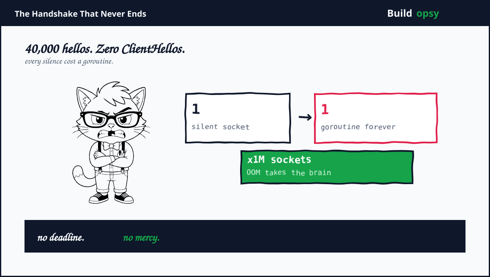
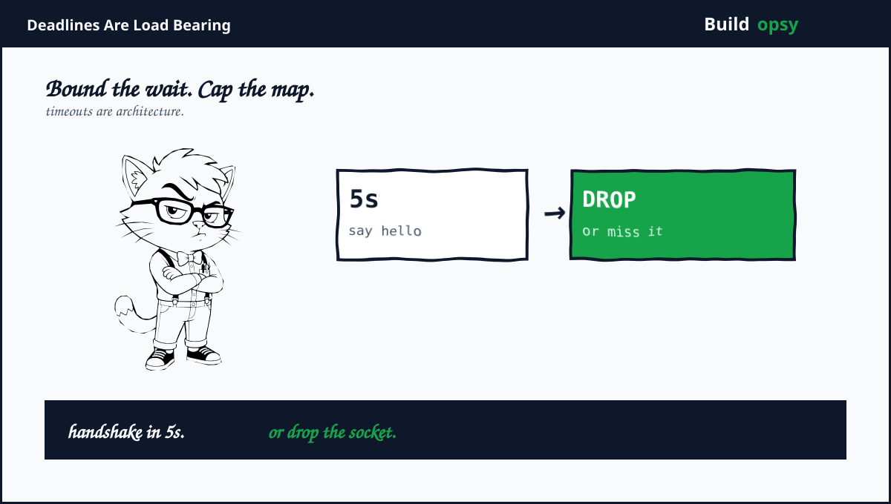

1. The Listener That Trusts Silence
etcd is the memory of Kubernetes. Every deployment, every secret reference, every lease lives in its key-value store. Lose etcd plus the API server loses its brain. Scheduling stops. Controllers stop. The workloads keep running blind while nobody can steer them. That centrality is why a denial-of-service flaw in etcd reads less like a bug plus more like a blueprint.
The flaw sits in the TLS accept loop in the transport package. Accept a TCP connection, spawn a goroutine, block inside the TLS handshake waiting for a ClientHello that never arrives. Track the pending connection in a map. No deadline on the wait. No cap on the map. The code trusts every new connection to eventually speak. An attacker simply never speaks. Each silent socket costs the attacker one file descriptor plus costs the server a goroutine, kernel buffers, TLS state, plus a map entry, accumulating without bound until the process exhausts memory plus the operating system intervenes.
2. The Math of Nothing
Price one silent connection from the server side. A fresh Go goroutine reserves an 8KB stack. Kernel socket buffers add tens of kilobytes per direction. TLS connection state plus the tracking map entry add more. Model roughly 64KB of server memory per parked connection, labeled estimate. At 100,000 silent connections that is about 6.4GB, enough to drown a typical etcd member sized for consensus traffic rather than connection hoarding. At one million connections the number passes 60GB, which exceeds most etcd hosts outright. The attacker side of the ledger: one million idle sockets from a modest botnet or even a single tuned host raising file descriptor limits. Slowloris economics applied to the control plane.
Now bound the same math with a handshake deadline, which is exactly what the fixed releases enforce. With a 5-second cap, holding 100,000 parked connections requires opening 20,000 new connections per second forever, against timeouts, against connection tracking, against every rate limiter the operator owns. The attack degrades from a campfire to a treadmill. Without the deadline the attacker pays once per connection plus holds forever. With it the attacker pays continuously plus the server reclaims continuously. Timeouts convert memory exhaustion into a bandwidth contest the defender can win. That single missing timer was the whole vulnerability.
Count your own exposure with the pool sizer. Enter peak connection counts plus hold times to see what concurrent state your servers must carry. Then ask what happens when the hold time has no ceiling. Unbounded waits turn every connection counter into a memory counter. The calculator prices the honest case. The attacker prices the missing bound.
3. Why No Deadline Existed
Go servers commonly set handshake timeouts at the HTTP layer, where timeouts are one option among many. etcd TLS listeners are built lower, through transport helpers that never imposed one. Each layer assumed another layer owned the waiting policy. The HTTP server assumed the listener filtered. The listener assumed handshakes complete. The handshake assumed clients speak first. Three assumptions plus zero timers equals indefinite trust in strangers.
This is CWE-770 wearing work boots: allocation of resources without limits or throttling. The goroutine plus the map entry are allocated per connection with no ceiling, no eviction, plus no accounting visible to operators. Resource exhaustion flaws hide well because every individual allocation looks reasonable. One goroutine is nothing. One map entry is nothing. A million nothings is an outage. Reviewers see the single case. Attackers see the loop.
The exposure question matters as much as the code. Kubernetes itself does not use etcd built-in auth, so typical managed clusters keep etcd off public networks by construction. Self-managed clusters, development clusters with port forwards left open, plus etcd running outside Kubernetes for service discovery or locking face the reachable-listener case directly. The advisory says it plainly: a network attacker who can reach the listener. Reachability is the vulnerability second half. Harden either half plus the chain breaks.

4. What Went Wrong in the Design
Acceptance preceded authentication. The server spent memory before verifying anything about the peer. Costly work should follow cheap proof, not precede it. A ClientHello is cheap to demand. Waiting forever for one is expensive to offer.
The pending map was a leak with a data structure. Tracking unfinished handshakes is correct bookkeeping. Tracking them without expiry turns bookkeeping into accumulation. Every cache needs an eviction story. This one had a map plus hope.
Listeners shipped without timeout budgets. No handshake deadline, no idle timeout, no documented maximum for pending connections. Timeouts are not performance tuning. They are the load-bearing walls of network servers.
Operators could not see the pileup. Goroutine counts plus pending-handshake gauges existed as internals, not as first-class alerts. An attack that grows over hours should page in minutes. Silence in the metrics matched silence on the wire.
5. What Should Happen Instead
First, upgrade to the fixed releases: 3.5.33, 3.6.14, or 3.7.1 depending on the line in use. The patch enforces the missing handshake deadline. This is the only fix that removes the flaw rather than narrowing its window. Schedule it like a control-plane incident, because that is what unpatched exposure amounts to.
Second, bound every wait even after patching. Handshake timeouts, idle timeouts, plus maximum pending-connection caps form defense in depth around any single fix. Set the handshake budget near 5 seconds. Alert at a fraction of the cap, not at the cap. Limits nobody monitors are intentions.
Third, shrink the reachable set. etcd ports should accept connections only from API servers plus explicitly trusted operators, enforced by network policy or mTLS identity, not by optimism. Measure the listener exposure tonight with a port scan from an untrusted network position. Surprises there outrank surprises anywhere else.
Fourth, alert on the pileup signals. Goroutine count growth, pending handshake counts, plus memory growth uncorrelated with key counts each name this attack while it is still cheap to stop. Add all three to the control-plane dashboard with paging thresholds. The next silent-connection campaign should wake someone before it bankrupts memory.
Fifth, chaos-test the accept path. Open ten thousand silent connections against staging etcd plus watch the gauges. If the test is forbidden in production hours, that fear is itself the finding. Systems that cannot survive their own acceptance tests are accepting too much.
6. The Verdict
The advisory is admirably precise: named file, named function, named missing bound, named fixed versions. The ecosystem responded fast with database entries across NVD, Go, Debian, plus distro trackers within days of the August 12 publication. That machinery worked. What failed was older plus quieter: a listener written in an era of trusted networks, carried forward into an era of exposed everything.
The pattern generalizes to every server you operate. Find the waits without numbers. Handshake timeouts, idle timeouts, queue bounds, retry budgets. Each unbounded wait is a standing invitation priced in someone else memory. etcd paid with control-plane availability. Your service would pay with whatever its listeners protect. Audit the silence before someone else monetizes it.
Zero payloads. Zero credentials. One missing timer. The whole control plane.
Sources and Method
This postmortem follows the NVD record, the Go vulnerability database, plus the etcd security advisory. Mechanism details come from the published descriptions. Memory figures are modeled from Go runtime behavior.